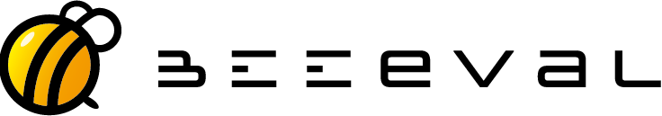

BEEEVAL RESEARCH 2026 / VOL.01
座舱 AI
行业趋势
白皮书2026
从能力差异，看见演进方向 ↗
年度研究
2026 座舱 AI 行业趋势白皮书
从功能域、任务与能力结构，理解不同车型的表现差异。

登录 / 注册进入评测平台 ↗COCKPIT INTELLIGENCE, EXAMINED.
座舱 AI 评测、研究与预研验证。
推动汽车智能，回应人的真实需求。
一手评测证据 ／ 可用于决策的研究 ／ 可运行的场景验证
BEEEVAL / CYBEREDGE01 / RESEARCH & INSIGHTS
从功能域、任务与能力结构，理解不同车型的表现差异。
30 个案例，区分能力解释、接管指引与真正的恢复路径。
从导航、目的地修正与出行任务，定位具体的体验差距。
02 / EVIDENCE IN FOCUS
功能域表现、任务完成、测试视频。
在 BeeEVAL 中，把结果与过程连接起来。
VEHICLE INTELLIGENCE PROFILE
数据来自已有年度白皮书快照 · 2026.10.07
不同版本与采集条件，详见完整报告。
ANONYMOUS VEHICLE / SAMPLE A
SCENARIO PERFORMANCE / SAMPLE A
BeeEVAL · 2026.10.07 任务分类统计快照 · 每个点为一个任务类别的版本统计中位数
由总体分数深入到具体功能域。
结合完成情况，理解得分的边界。
查看视频与对应的评分记录。
03 / SCENARIO RESEARCH
BeeScene 场景探索库
连接用户需求、评测任务与预研方向。
04 / POC LAB
FROM USER VALUE TO WORKING PROTOTYPES用户价值定义方向，技术验证回答可行性。
围绕记忆、感知与情感化能力，探索座舱体验的下一步。
EXPERIMENT WITH PURPOSE
将记忆能力放进具体的使用情境，验证重复任务中的帮助，以及何时需要确认、更新或遗忘。
基于 CyberEdge，支持场景开发、运行与实车展示，让新的想法进入可观察的环境。
把 AI 新能力转化为具体体验，以可运行的 POC 验证用户价值与技术要求。
05 / ABOUT BEEEVAL
蜜蜂智评 BeeEVAL，专注座舱 AI 预研验证与评测。我们从真实的产品表现出发，将评测数据转化为研究洞察，再将新的能力转化为可验证的场景。
评测研究、定制咨询与 POC 验证，服务于产品定义和持续迭代。